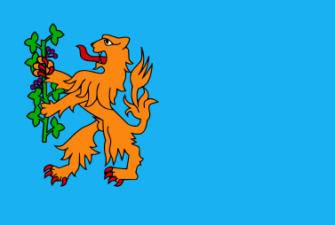

Brummen
- Land
- Nederland
- Provincie
- Gelderland
- Gemeente
- Brummen
- Coördinaten
- 52° 5′ NB, 6° 9′ OL
- Inwonertal
- 8.485 (per 1-1-2021)
- Eerste vermelding
- 794(als Brimnum)
Sinterklaasintocht 2023
De Sint heeft besloten dat hij, na de drukke intocht op zaterdag in Gorinchem, zal overnachten in Brummen bij
Audreys aan het Marktplein.
In het grootste geheim hebben de kinderen van Brummen een verrassing voorbereid.
Op zondagochtend zullen zij zich verzamelen op het Marktplein en onder leiding van de burgemeester en van Hans Anders,
de presentator van het Brummense Sinterklaasjournaal, zullen zij de goedheiligman wakker zingen.
Later op de ochtend zal Sinterklaas zich samen met de burgemeester naar de muziekkoepel begeven, waar hem de
volgende verrassing te wachten staat: een ochtengymnastiek sessie met alle Pieten en kinderen van Brummen.
Na het zingen van een aantal tradionele liedjes is er tijd voor de kinderen om, onder het genot van pepernoten,
chocolademelk en manderijnen, de Sint gedag te zeggen, op de foto te gaan, etc.
Vervolgens mogen de kinderen hem uitzwaaien als hij zijn tocht door het land gaat voortzetten.
Gallery Aaldering
Cras vel iaculis risus, vestibulum viverra metus. Morbi volutpat tristique urna sed vehicula.
Quisque vitae faucibus ante. Donec vitae lobortis quam. Integer nec risus et urna feugiat pretium.
Suspendisse rhoncus leo non libero suscipit lacinia. Fusce id elit quis ligula auctor cursus sit amet et nulla.
Aenean at nunc tempus urna dictum cursus.
Proin dapibus odio ac odio consectetur feugiat. Vestibulum accumsan malesuada maximus.
Nulla facilisis elit eu felis tristique tincidunt. Integer id arcu nec dui rhoncus dapibus sed eget tortor.
Ut eleifend magna id nisi pellentesque consectetur. Sed consectetur lobortis nulla et congue.
Donec vitae eros in magna facilisis ultricies. Fusce congue libero felis.